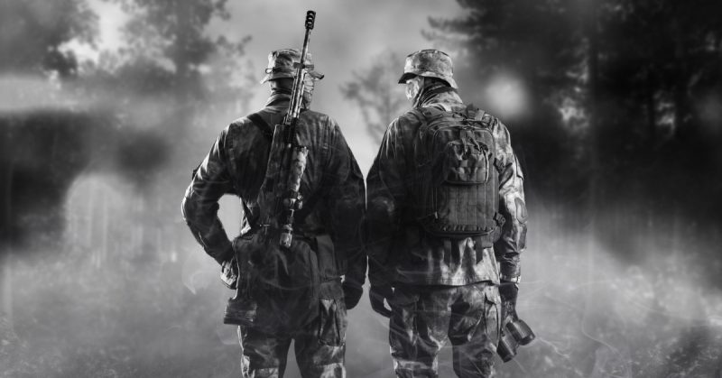

Operações Clandestinas e Secretas
Os governos nacionais lidam com funções de operações especiais e de inteligência, para o emprego em operações clandestinas e secretas.
Operações Clandestinas: cuja existência não é conhecida fora dos círculos governamentais relevantes, ou simplesmente não podem ser vinculadas ao patrocinador.
Operações Secretas: é sabido que a sabotagem está ocorrendo, mas seu patrocinador é desconhecido.
É uma questão contínua e não resolvida para os governos se a coleta clandestina de inteligência e a ação secreta devem estar sob a mesma agência.
Os argumentos para isso incluem ter funções centralizadas para monitorar a ação secreta e a HUMINT clandestina e garantir que elas não entrem em conflito, bem como evitar a duplicação de serviços comuns, como cobertura de suporte à identidade, contra-espionagem e comunicações secretas.
Os dados coletados das distintas operações sugerem que o gerenciamento das duas atividades adotem uma mentalidade e habilidades bem diferentes, em parte porque a coleta clandestina quase sempre está em uma linha do tempo mais lenta que a ação secreta.
